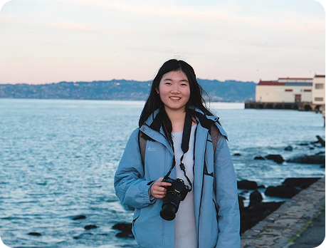
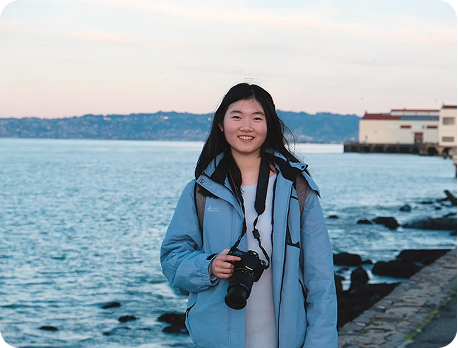

I'm Ashley, a senior at Northwestern University studying Cognitive Science. I’ve always been fascinated by people, how we think, connect, and navigate the world. Growing up in China, Taiwan, the United Kingdom, and Italy exposed me to diverse ways of thinking and living. Now, I bring my curiosity about people and global perspective to everything I do.
 

China
Hover over the dots to explore photos from places I've lived.
Morehead Family Innovator Fellowship Recipient — 2024
Selected as a fellow in a prestigious entrepreneurship program supporting student founders and innovators.
- Taking ideas from concept to execution by successfully launching an app in the App Store.
Bay Area UX Immersion — 2024
Competitive, small-cohort immersion focused on UX and emerging media.
- Built a foundation in UX design, media tech, and storytelling.
- Engaged in hands-on workshops at the Stanford Design School to gain insights from leading design educators.
Jumpstart Pre-Accelerator Fellow — 2023
Chosen as a startup founder for Northwestern’s pre-accelerator at The Garage.
- Successfully pitched and secured $10,000 in funding for my startup, attracting investment and driving innovative ideas forward.
- Gained firsthand experience in idea validation, decision-making under constraints, and translating insight into product direction.
Beyond research, I just love making. Whether I'm cooking up new recipes, crocheting, or crafting furniture for my (furnitureless) apartment, creating is a constant in my life.
Creative Outlets
Cooking, Crocheting, DIY Furniture
Passions
Doodling, Photography, & trying all kinds of cheeses 🧀